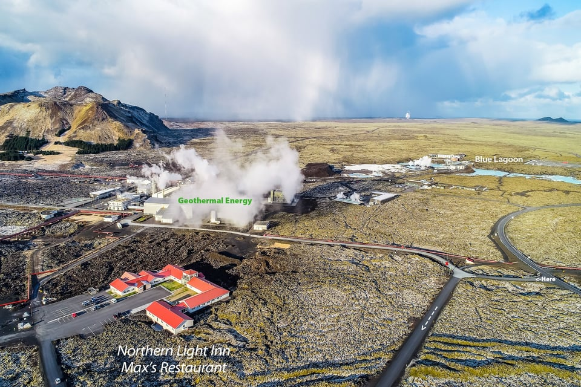
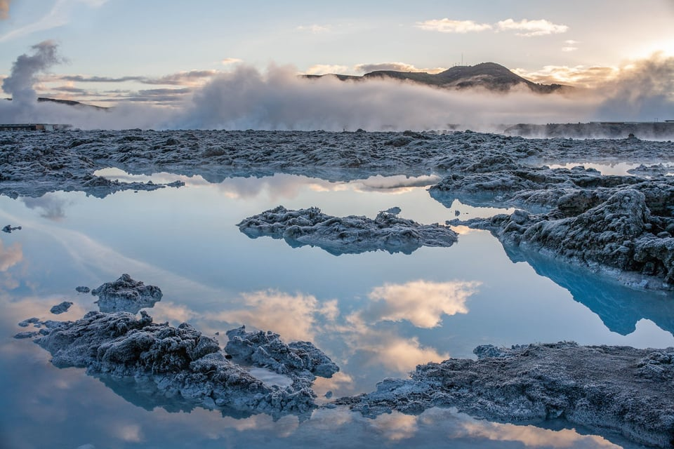
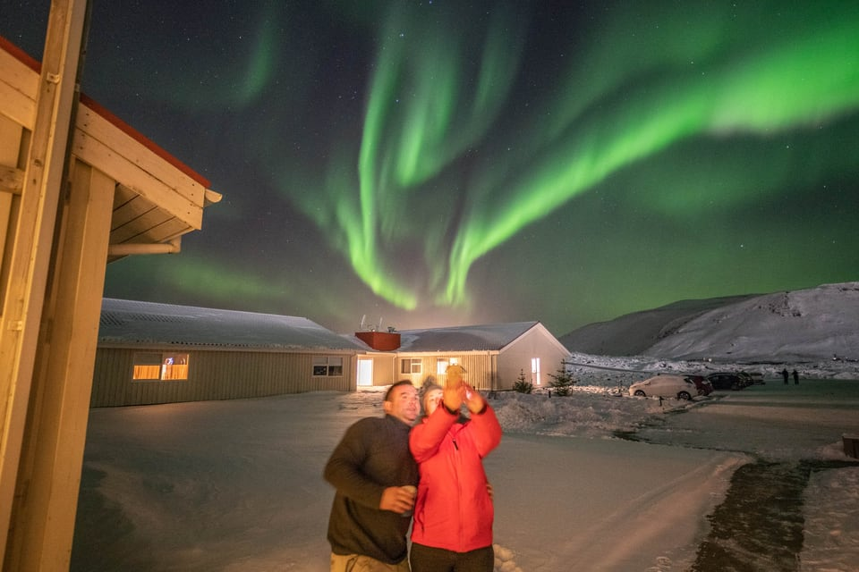

Staðsetning
Rétt viðBláa lónið
20 mínútur frá Keflavíkurflugvelli og 45 frá Reykjavík.
Leiðin
Vegur 41,svo vegur 43
Farðu veg 41, milli Keflavíkurflugvallar og Reykjavíkur, og beygðu inn á veg 43, Grindavíkurveg. Sum leiðsöguforrit sýna enn úreltar leiðir, svo fylgdu skiltunum að hótelinu.
- Keflavíkurflugvöllur20 mínútna akstur
- Reykjavík45 mínútna akstur
- HeimilisfangNorðurljósavegur 1, 241 Grindavík

Bláa lónið
Frí skutlaá heila tímanum
Hótelið rekur fría áætlunarskutlu fyrir gesti sína. Bókaðu sjálft Bláa lónið með fyrirvara, því þar selst oft upp.
- Í lóniðÁ heila tímanum, eftir pöntun í móttöku, til kl. 21:00
- Til baka12:05, 14:05, 16:05, 18:05, 19:05, 20:05 og 21:05
Norðurljós
Stígðu útog líttu upp
Fjarri borgarljósum er hótelið góður staður til að sjá norðurljósin. Norðurljósatíminn er frá lokum ágúst fram í fyrstu viku apríl. Skráðu þig í móttökunni og hótelið hringir í herbergið þegar ljósin birtast.

Flugvallarakstur
Leigubíll á afslættitil og frá flugvelli
Hótelið vinnur með leigubílastöðinni A-Stöðin. Afsláttarverð er pantað með sólarhrings fyrirvara fyrir komu og kvöldið áður fyrir brottför, ein ferð á herbergi hvora leið.
Svæðið
Opið ogvel undirbúið
Hótelið er opið. Það stendur á jarðskjálftavirku svæði og hefur ítarlegar öryggisráðstafanir, sem lýst er á vef þess.